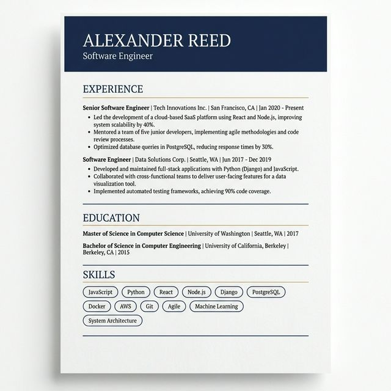
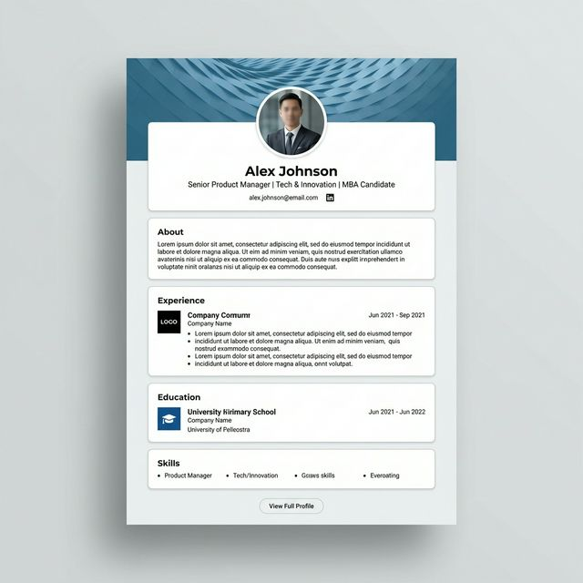
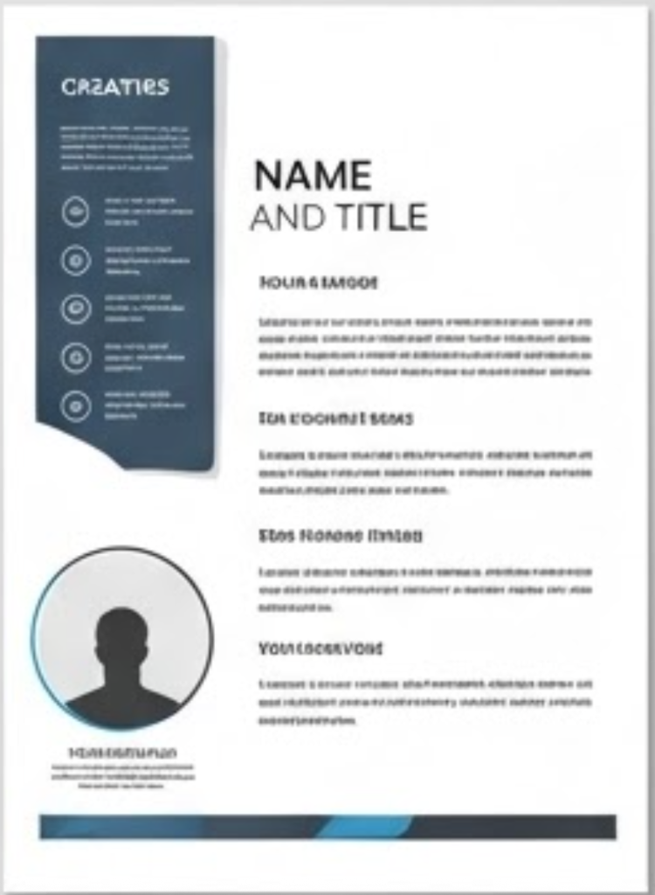
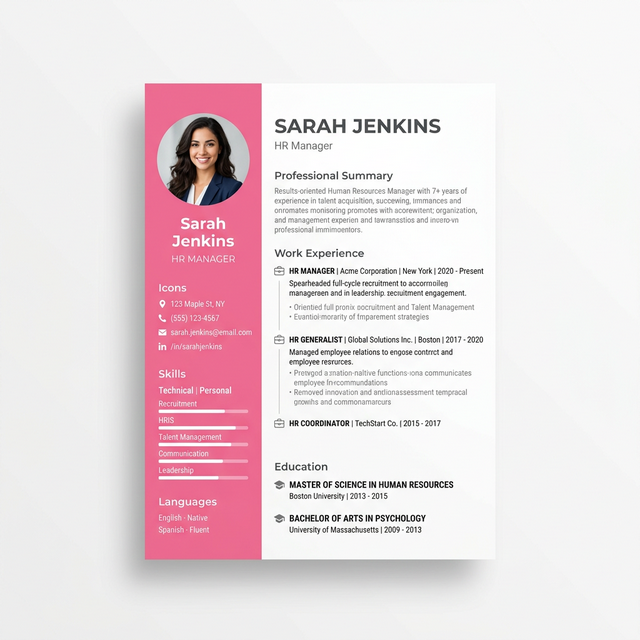

Modern
Modern
Çağdaş ve şık. Fotoğraflı sol sütun, beceri rozetleri ve zaman çizelgeli deneyim akışıyla dengeli iki sütunlu düzen.
Başvurduğun pozisyona uygun tasarımı seç. Tüm şablonlar metin tabanlı, ATS dostu PDF üretir; renkler ve bölüm düzeni uygulama içinden kişiselleştirilebilir.
Çağdaş ve şık. Fotoğraflı sol sütun, beceri rozetleri ve zaman çizelgeli deneyim akışıyla dengeli iki sütunlu düzen.

Geleneksel ve profesyonel. Lacivert başlık bandı, serif tipografi ve net bölüm çizgileriyle kurumsal başvuruların vazgeçilmezi.

Cesur ve renkli. Canlı degrade yan panel ve enerjik başlıklarla tasarım, medya ve pazarlama rolleri için dikkat çekici bir seçim.

Sofistike ve minimal. Fildişi zemin, ince altın vurgu çizgisi ve serif başlıklarla sade ama ağırbaşlı bir görünüm.

Yeni mezunlar için. Kart temelli bölümler ve profil odaklı başlık; sınırlı deneyimi düzenli ve modern biçimde sunar.

Üst düzey roller için. Koyu yan panel, geniş beyaz alan ve büyük isim bloğuyla liderlik pozisyonlarına uygun, ciddi bir duruş.

Yenilikçi roller için. Canlı renkli yan şerit, beceri seviye barları ve kompakt düzenle dinamik ekiplere hitap eder.

Zengin koyu yeşil tasarım. Fotoğraflı yeşil yan panel ve net içerik sütunuyla hem klasik hem çağdaş bir karakter taşır.
CV Maker Pro+ içeriğini ATS uyumlu hale getirir, güç skorunu ölçer ve seçtiğin şablonla profesyonel bir PDF üretir.
App Store'da Yakında iPhone için · Türkçe dahil 6 dil